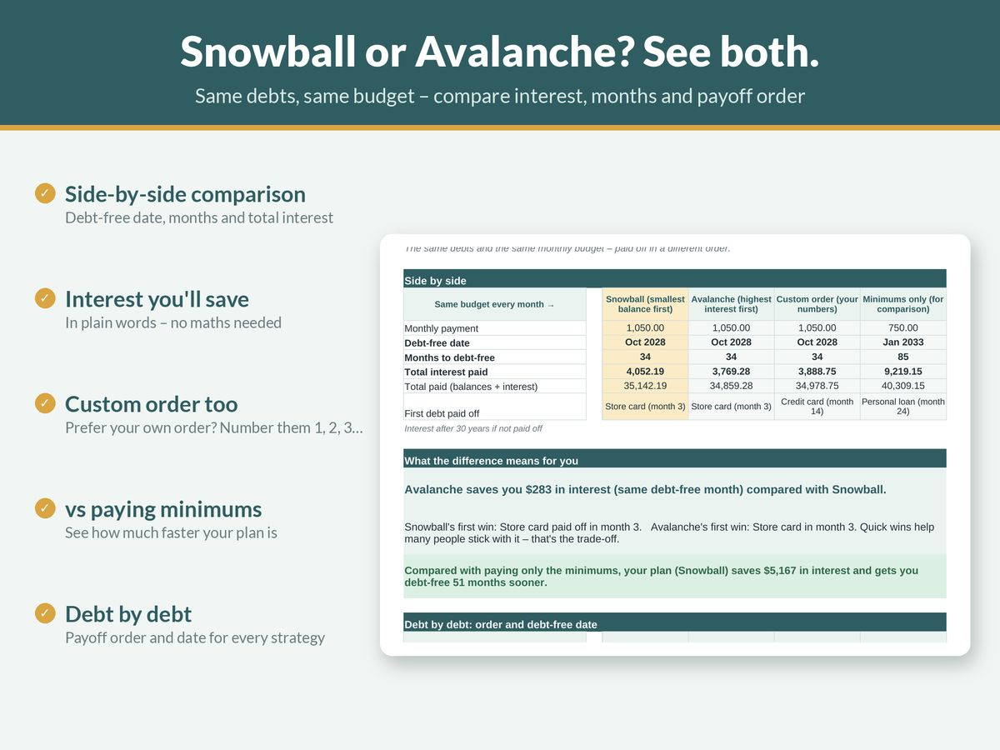

Debt Snowball vs Avalanche: Which Is Better? (With a Worked Example)

If you have more than one debt and some money left over after the minimum payments, you have a decision to make: which debt gets the extra money first?
The two best-known answers are the debt snowball and the debt avalanche. Both work. Both use the same basic mechanics. They differ only in the order you attack your debts, and that one difference changes how much interest you pay and how quickly you feel progress.
This guide explains both methods, runs them side by side on the same set of debts, and helps you choose.
The shared mechanics
Both methods follow the same three rules:
- Pay the minimum on every debt, every month. Missing minimums brings fees, penalty rates and credit damage, which undo any strategy.
- Put every spare dollar towards one target debt. Spreading extra money across all your debts slows everything down.
- When a debt is paid off, roll its payment into the next target. The money you were paying on the cleared debt doesn't go back into your spending. It joins the attack on the next one. That growing payment is the "snowball" (or "avalanche").
The US Consumer Financial Protection Bureau describes exactly these two approaches in its debt guidance, calling them the "highest interest rate method" and the "snowball method" (CFPB).
The debt snowball: smallest balance first
With the snowball, you list debts from smallest balance to largest, ignoring interest rates. The smallest debt gets all the extra money until it's gone, then the next smallest, and so on.
Why people like it: you clear a whole debt quickly. One fewer bill, one fewer login, one fewer statement. That early win can be motivating.
The trade-off: if a large balance carries a high interest rate, it keeps charging that rate for longer, so you'll usually pay more interest overall.
The debt avalanche: highest interest rate first
With the avalanche, you list debts from highest interest rate to lowest, ignoring balances. The most expensive debt gets the extra money first.
Why people like it: it's the mathematically cheapest order. Every extra dollar goes where it saves the most interest, so you pay less in total and are often debt-free a little sooner.
The trade-off: if your highest-rate debt is also a big one, it can take months before you clear anything at all. Some people lose momentum during that stretch.
A worked example
Let's make it concrete. Here are four debts. The numbers are invented for illustration but the calculations are real.
| Debt | Balance | Interest rate (APR) | Minimum payment |
|---|---|---|---|
| Store card | $800 | 18% | $25 |
| Credit card | $5,000 | 23% | $125 |
| Personal loan | $3,500 | 11% | $95 |
| Car loan | $7,000 | 6.5% | $210 |
| Total | $16,300 | $455 |
Our borrower can afford $700 a month in total towards debt. That's $455 of minimums plus $245 extra.
How it was calculated: each month, interest is added at the annual rate divided by 12, then the minimums are paid, then the extra money (plus any rolled-over payments) goes to the target debt. Payments stay at $700 until everything is cleared. Real lenders calculate interest in slightly different ways (daily balances, fees, changing minimums), so treat these as illustrations, not quotes.
Snowball order
Smallest balance first: Store card → Personal loan → Credit card → Car loan.
| Debt | Paid off in month |
|---|---|
| Store card | 4 |
| Personal loan | 13 |
| Credit card | 23 |
| Car loan | 28 |
Debt-free in 28 months. Total interest: about $2,624.
Avalanche order
Highest rate first: Credit card (23%) → Store card (18%) → Personal loan (11%) → Car loan (6.5%).
| Debt | Paid off in month |
|---|---|
| Credit card | 16 |
| Store card | 18 |
| Personal loan | 23 |
| Car loan | 27 |
Debt-free in 27 months. Total interest: about $2,207.
Minimum payments only, for comparison
If the borrower paid only the $455 of minimums and didn't roll anything over, the last debt (the credit card) would take 77 months to clear and total interest would be about $6,411.
What the example shows
- Both strategies are dramatically better than paying minimums alone. Either one saves roughly $3,800 or more in interest and around four years of payments here. Choosing a method matters less than committing to one.
- The avalanche saved about $417 and finished one month sooner than the snowball.
- The snowball delivered its first win in month 4. The avalanche didn't clear a single debt until month 16.
That last point is the whole debate in a nutshell. The avalanche is cheaper. The snowball gives you a finished debt a year earlier.
What the research says about motivation
The idea that small wins keep people going isn't just folklore. Researchers David Gal and Blakeley McShane at Northwestern University's Kellogg School studied data from a debt settlement program and found that closing individual debt accounts predicted whether people went on to eliminate their debts, even after accounting for the dollar amounts involved (Journal of Marketing Research, 2012; Kellogg summary).
The authors were careful to say that paying the highest rate first is still the cheaper strategy, and suggested people should know about both the financial and the psychological sides before choosing. That's a fair summary of where things stand.
How to choose
Ask yourself these questions:
How big is the interest gap? If your debts have similar rates, the two methods will produce almost identical results, so pick the snowball and enjoy the quick wins. If one debt has a much higher rate than the rest, the avalanche's savings get bigger.
Where is the high-rate debt? If your highest-rate debt is also your smallest, both methods start in the same place. No dilemma.
How have past attempts gone? If you've started payoff plans before and drifted off them, the snowball's early wins may be worth the extra interest. A plan you stick to beats a perfect plan you abandon.
How much extra can you pay? The more extra money you put in each month, the faster both methods go and the smaller the difference between them in absolute terms.
Are you happy to mix? Plenty of people use a hybrid: clear one or two tiny balances first for momentum, then switch to highest-rate-first. Any order that keeps rolling payments forward works far better than none.
Practical tips for either method
- Automate the minimums so nothing is ever missed, then make the extra payment manually so you feel the progress.
- Keep a small emergency fund alongside your payoff plan, so a surprise bill doesn't land straight back on a credit card.
- Stop adding to the debts you're paying off. Otherwise the plan is running on a treadmill.
- Check for better rates. A lower-rate consolidation loan or balance transfer can help, but read the fees and the end-of-promotion rate carefully.
- Track it visually. A payoff chart or a coloured-in thermometer makes slow months easier to bear.
- Recalculate when something changes: a new rate, a pay rise, a windfall or a new debt.
Run your own numbers
The fastest way to decide is to see both methods side by side with your debts. Doing that by hand means a month-by-month table for every debt, which is tedious and easy to get wrong.
Our Debt Payoff Planner does it for you. Enter up to 15 debts and your monthly budget and it compares Snowball, Avalanche and your own custom order against minimums only. You'll see the payoff month for each debt, total interest, interest saved and a full payment schedule, plus a payment log and a printable debt-free thermometer. It works in Excel and Google Sheets, in any currency.
If your income varies month to month, set up a steady budget first. Our guide on how to budget on an irregular income explains how, and the debt payoff step then becomes much more predictable. To find the extra money for debt each month, try zero-based budgeting, and if money is very tight, start with our guide on how to budget on a low income.
The bottom line
- The avalanche (highest rate first) costs less.
- The snowball (smallest balance first) gives faster wins, which research suggests can help people stick with it.
- Both are far better than paying minimums. Pick the one you'll actually follow, roll every freed-up payment forward, and keep going.
This guide is general information, not financial or debt advice. Figures in the example are illustrative. If you're struggling with debt, consider talking to a free, reputable debt advice service in your country.
More guides
- A Simple Budget Template for Beginners (and How to Fill It In)
- How to Budget on an Irregular Income (A Step-by-Step Method)
- Zero-Based Budgeting Step by Step: Give Every Dollar a Job
- Sinking Funds Explained: How to Stop Big Bills Wrecking Your Budget
- How to Budget on a Low Income: A Practical, Judgement-Free Guide
- Small Business Bookkeeping for Beginners: A Simple System for Freelancers and Sole Traders
- Wedding Budget Breakdown by Category: A Practical Starting Split
- How Much Does a Baby Cost in the First Year? How to Estimate and Plan for It
- How to Set Up a 2027 Planner You'll Actually Use
- How to Write a Resume With No Experience (With Examples)